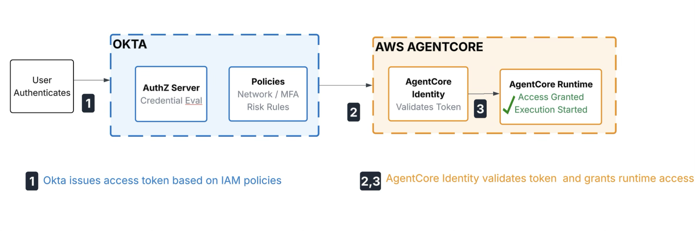
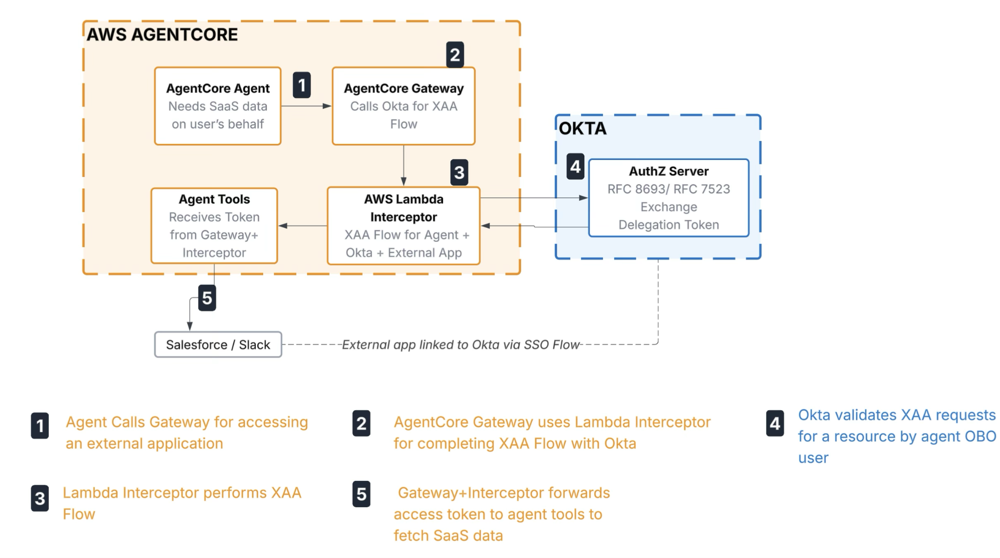
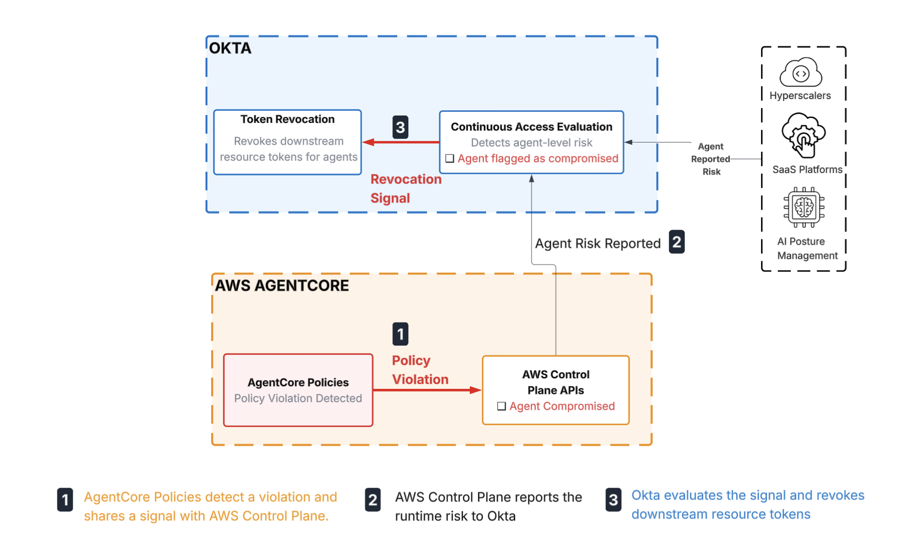
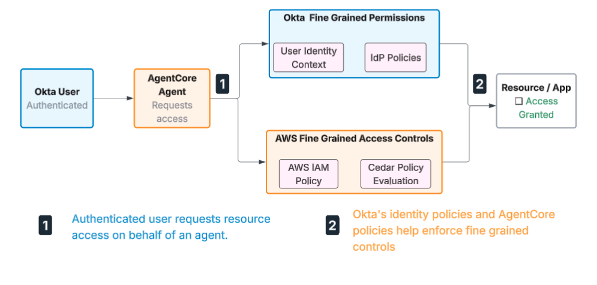
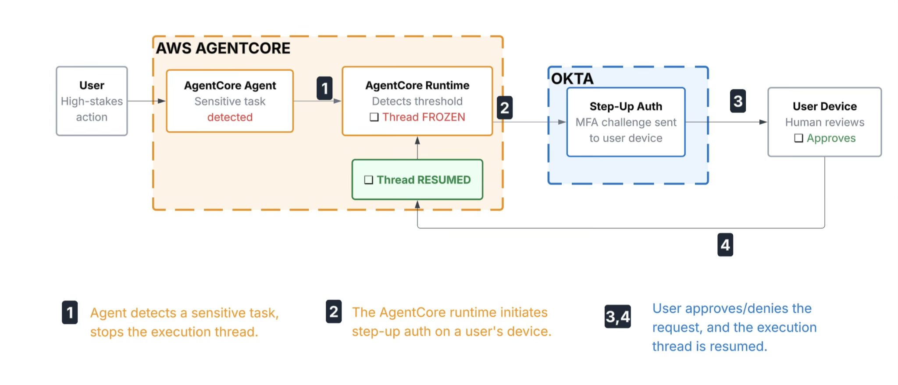

Joint Okta & AgentCore Use Cases (Where They Interlock)
When to use Okta & when to use AWS AgentCore
Your in-conversation reference for customer meetings. Each card shows a real use case.
⚙️Assumed context: All use cases on this page apply to organizations that already run Okta as their corporate IdP and AWS AgentCore as their agent platform.
1
Use Case 1: Registering Agents
As a governance lead, I want to register and catalog every AI agent as a governed entity, so that I can prevent “shadow AI” and maintain full corporate accountability and compliance oversight for every digital worker.
Okta registers the agent as a governed corporate identity with named human owners, a certification schedule, and a deactivation path. Okta answers who is accountable for this agent and regulates access.
AgentCore's Role — Runtime Identity Registry
AgentCore Identity gives that same agent a workload identity inside AWS, so it can prove itself to AWS services and obtain scoped outbound credentials without embedded secrets. AgentCore Identity answers how this agent authenticates and obtains credentials at runtime.
💡
The Bottom Line — Why You Need Both
Okta registers the agent as a governed corporate identity with named human owners, a certification schedule, and a deactivation path. AgentCore Identity gives that same agent a workload identity inside AWS, so it can prove itself to AWS services and obtain scoped outbound credentials without embedded secrets. Okta answers who is accountable for this agent and regulates access. AgentCore Identity answers how this agent authenticates and obtains credentials at runtime.
2
Use Case 2: Zero-Trust Inbound Agent Activation
As a system administrator, I want to restrict access to my AI Agent to only risk-verified and authenticated employees, so that AgentCore runtime is only accessed within a verified identity.
Architecture Flow

Okta's Role
Evaluates corporate credentials, network egress flags, and real-time device health to issue a secure user access token. In practice, an employee cannot access the agent unless they have authenticated with Okta MFA — and can be configured to require passing device compliance checks and clearing any active risk signals — making Okta the gatekeeper.
AgentCore's Role
Intercepts the request at the entry, validates Okta's access token, and spins up a runtime session. Every agent is gated on a verifiable Okta JWT — any session launched without a valid, unexpired token is rejected at the perimeter before any access is provisioned.
💡
The Bottom Line
Okta secures the enterprise perimeter; AgentCore leverages that validation to safely spin up the underlying AI compute space.
3
Use Case 3: Cross App Access (On-Behalf-Of a user flow)
As an agent developer, I want my AI agents to fetch data from external SaaS applications (such as Salesforce or Slack) using the authority of a human user, so that the agent operates within user's allowed permissions.
Architecture Flow

Okta's Role
Acts as the Authorization Server to enforce global identity topologies and eliminate point-to-point app connections. It mints a token that cryptographically binds the human user and agent identities together. This allows the agent to cross application boundaries securely without exposing primary user tokens or relying on siloed, hardcoded credentials. Because the XAA grant is admin-configured at the org level, end users never see a consent screen — the agent operates silently on their behalf.
AgentCore's Role
Maps the agent's intent to a secure runtime thread and routes the request—along with the user's primary identity context—to the AWS Lambda Interceptor. The Lambda function then manages the XAA flow with Okta, uses the scoped access token in memory to eliminate redundant API calls, and injects it directly into outbound headers.
💡
The Bottom Line
Okta serves as the cryptographic authority to grant cross-boundary access; AgentCore handles real-time credential caching and transport.
📝 Note: The Lambda interceptor pattern is an interim solution, required because cross-app access is not yet natively supported between Okta and AWS AgentCore. The partnership team is actively collaborating with AWS to build native cross-app access directly into the AWS AgentCore credential provider, which will eliminate existing custom code pattern and make token handling completely seamless.
4
Use Case 4: Agent Risk Signaling & Coordinated Remediation
As a security operator, I want AgentCore to detect and respond to policy violations immediately, and share those risk signals with Okta so the right remediation can be triggered — whether that’s revoking connected resources, or suspending the underlying user.
⚠️ Note: This is a high-level illustration of how a coordinated agent kill switch could work — the full end-to-end flow is directional and in progress.
Architecture Flow

Okta's Role — Enterprise-Wide Remediation
When Okta receives a risk signal from AgentCore, it determines the appropriate enterprise-wide response — this is where the scope expands beyond a single session. Okta can revoke the agent's corporate identity, deactivate the SaaS resources it is connected to, or suspend the underlying user account entirely. The right action depends on the severity of the signal, and customers configurations.
AgentCore's Role — Immediate Local Response & Risk Signal
AgentCore monitors live payloads and tool behavior against its policy engine. If a violation is detected, it can terminate the agent session immediately and on its own — it does not need Okta for that. But local termination only stops this session. AgentCore then sends a real-time risk signal to Okta so the broader threat — across identity, resources, and users — can be assessed and acted on.
💡
The Bottom Line
AgentCore handles the immediate local threat autonomously; Okta handles the broader identity and resource response. Together they form a coordinated remediation loop — one that can escalate, when the situation demands it, all the way to a full agent kill switch across the enterprise.
5
Use Case 5: Two Independent Authorization Layers
As a compliance manager, I want Okta's fine-grained permissions and AgentCore's Cedar policy engine to independently evaluate access and tool safety — so that each check is separately audited and neither system depends on the other to reach its decision.
Architecture Flow — Two Complementary Authorization Layers

Okta's Role
Okta's fine-grained permissions evaluate the user's relationship and security policies to answer whether the requesting user has a relationship that permits access to the resource. It produces its own permit or deny decision and writes to its own audit log — independently of what AgentCore does next.
AgentCore's Role
AgentCore's Cedar policy engine is attached to the AgentCore Gateway and evaluates each MCP tool call before it is invoked — independently guarding the execution layer. It evaluates tool-call parameters including the claims present in the token, and blocks any unsafe or out-of-scope call at the gateway before it reaches any backend. The result is written to AgentCore's own audit log.
💡
The Bottom Line
Two authorization layers, each independently guarding its own domain — together they provide end-to-end coverage across both the identity and execution layers. Okta's fine-grained permissions answer whether the identity relationship permits access; AgentCore's Cedar engine answers whether the specific tool call is authorized to invoke. Failing either check blocks the action, and the combination covers risk surfaces that neither system could address alone.
6
Use Case 6: Human in the Loop
As a security administrator, I want to ensure that high-stakes operations, such as large financial transfers or critical database changes, are paused until an explicit human approval is provided, so that no sensitive action completes without verified intent.
Architecture Flow — Pause, Verify, Resume

Okta's Role
Sends an Okta Verify push to the approver's device and waits for confirmation before the agent takes any action — ensuring a human, not the agent, makes the final call on sensitive requests. Supervisor lookup and structured approval escalation are planned for the GA release.
AgentCore's Role
Detects a sensitive tool execution attempt against its HITL policy — such as a transaction over a defined threshold or an irreversible database operation — and hard-pauses the state machine before the tool is invoked. No further model output is generated and no tool call fires until AgentCore receives the signed confirmation callback from Okta.
💡
The Bottom Line
Use AgentCore to intercept exceptions and pause the runtime; use Okta to facilitate the secure out-of-band identity verification needed to resume work.